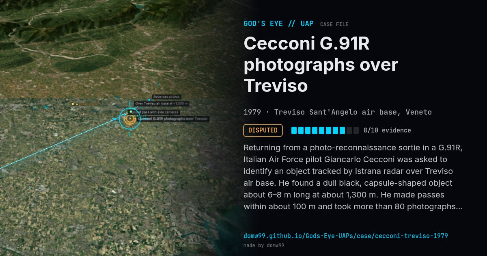

Cecconi G.91R photographs over Treviso

Returning from a photo-reconnaissance sortie in a G.91R, Italian Air Force pilot Giancarlo Cecconi was asked to identify an object tracked by Istrana radar over Treviso air base. He found a dull black, capsule-shaped object about 6–8 m long at about 1,300 m. He made passes within about 100 m and took more than 80 photographs with the aircraft's reconnaissance cameras. Then radar and the tower both lost it.
Explanation
The Italian Defence Ministry later said its photo interpreters had identified the object as a cylindrical balloon made of black plastic bags (a "solar balloon"). Cecconi rejected this, noting the object did not move in his jet's wake.
What was seen
Shape: Dull black, capsule-shaped, with a milky dome
Witnesses: Maresciallo Giancarlo Cecconi; Istrana radar; Treviso tower
Duration: About 5 minutes
Sources
Browse
- Italy
- 1970s
- Disputed
- Radar-visual cases
- Official government documents
- Military witnesses
- Pilot and aircrew witnesses
- Photographs
- Radar tracking
- Discs and saucers
- Cylinders and cigar shapes